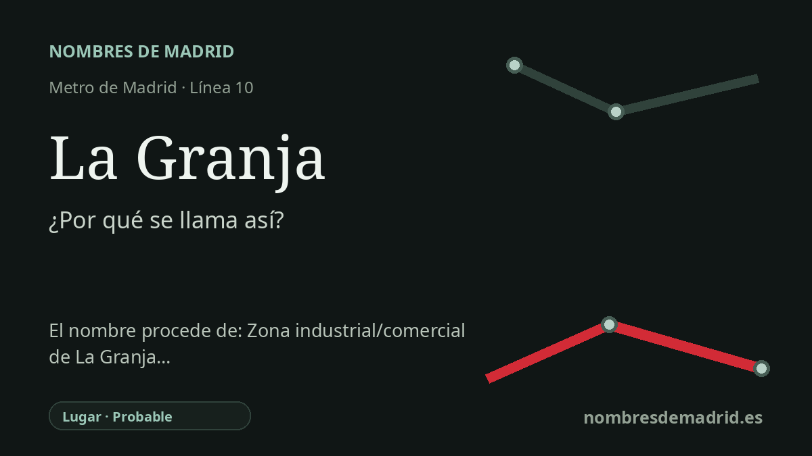

Publicado el · Investigación de Nombres de Madrid · Cómo verificamos cada origen · 8 fuentes consultadas
Respuesta rápida
La estación de La Granja toma su nombre de la calle de La Granja, una de las vías del polígono industrial de Alcobendas. La palabra significa 'granja', pero el origen documentado es el nombre viario y empresarial local, no una granja histórica concreta verificada.
La historia del nombre
La estación de La Granja recibe su nombre del lugar inmediato: la calle de La Granja, en Alcobendas. El CRTM enumera el acceso por la calle de Sepúlveda y el ascensor por la calle de la Granja, y el catálogo municipal de localizaciones sitúa la estación en la calle la Granja, 14. Para una etimología pública, el origen documental más sólido es por tanto la calle y el entorno del polígono industrial que la rodea.
La palabra española 'granja' designa una explotación rural o una finca dedicada a la cría de animales. Ese significado hace que el nombre evoque un paisaje anterior al actual conjunto de naves, oficinas y parques empresariales. Aun así, ninguna fuente oficial identifica en este punto una granja histórica concreta llamada La Granja, por lo que la resonancia agrícola sigue siendo una interpretación.
La estación forma parte de MetroNorte, la ampliación de la línea 10 construida para conectar el norte de Madrid con Alcobendas y San Sebastián de los Reyes. La documentación de la Comunidad de Madrid describe MetroNorte como una actuación que da servicio, entre otras zonas, a los polígonos industriales de Calabozos y Vereda de los Pobres, e incluye La Granja entre las once estaciones nuevas. La prensa contemporánea informó de la apertura de la ampliación el 26 de abril de 2007, mientras que una página de infraestructuras de la Comunidad de Madrid da el 23 de abril de 2007 como fecha de puesta en servicio.
El contexto urbano es clave. Los documentos municipales de planeamiento y localizaciones describen esta parte de Alcobendas como polígono industrial, y la calle de La Granja aparece como una vía real dentro de esa trama. Algunas referencias actuales hablan incluso del 'polígono de La Granja', señal de que el nombre de la estación y de la calle funciona ya como abreviatura de este distrito laboral y empresarial.
La estación toma el nombre de una calle local del área industrial de Alcobendas. Es más débil cuando presenta la explicación agrícola como plenamente verificada, porque ese paso depende del significado de la palabra y de la historia urbana general, no de un acuerdo municipal de denominación. El nombre previsto 'Alcobendas Industrial' aparece en materiales derivados de Wikipedia, pero no consta un documento oficial independiente que lo confirme.